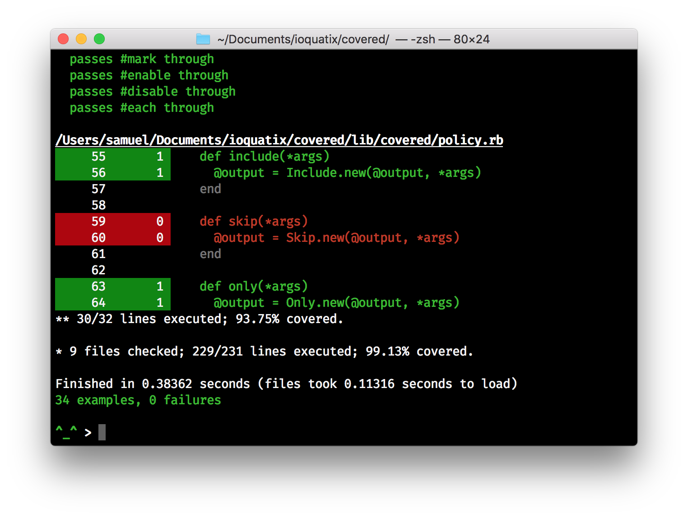

Covered

Covered uses modern Ruby features to generate comprehensive coverage, including support for templates which are compiled into Ruby.
- Incremental coverage - if you run your full test suite, and the run a subset, it will still report the correct coverage - so you can incrementally work on improving coverage.
- Integration with RSpec, Minitest, Travis & Coveralls - no need to configure anything - out of the box support for these platforms.
- Supports coverage of views - templates compiled to Ruby code can be tracked for coverage reporting.

Motivation
Existing Ruby coverage tools are unable to handle evaled code. This is because the coverage module built into Ruby doesn't expose the necessary hooks to capture it. Using the parser gem allows us to do our own source code analysis to compute executable lines, thus making it possible to compute coverage for "templates".
It's still tricky to do it correctly, but it is feasible now to compute coverage of web application "views" by using this technique. This gem is an exploration to see what is possible.
Installation
Add this line to your application's Gemfile:
gem 'covered'
RSpec Integration
In your spec/spec_helper.rb add the following before loading any other code:
require 'covered/rspec'
Ensure that you have a .rspec file with --require spec_helper:
--require spec_helper
--format documentation
--warnings
Minitest Integration
In your test/test_helper.rb add the following before loading any other code:
require 'covered/minitest'
require 'minitest/autorun'
In your test files, e.g. test/dummy_test.rb add the following at the top:
require_relative 'test_helper'
Usage
Please browse the source code index or refer to the guides below.
Partial Summary
COVERAGE=PartialSummary rspec
This report only shows snippets of source code with incomplete coverage.
Brief Summary
COVERAGE=BriefSummary rspec
This report lists several files in order of least coverage.l
Coveralls/Travis Integration
You can send coverage information to Coveralls by editing your .travis.yml file:
matrix:
include:
- rvm: 2.6
env: COVERAGE=PartialSummary,Coveralls
This will print out a brief report and then upload the coverage data. This integrates transparently with Travis.
See Also
- coveralls-ruby – the official Coveralls implementation for Ruby.
- simplecov – one of the original coverage implementations for Ruby, uses the built-in
coveragelibrary.
Contributing
- Fork it
- Create your feature branch (
git checkout -b my-new-feature) - Commit your changes (
git commit -am 'Add some feature') - Push to the branch (
git push origin my-new-feature) - Create new Pull Request
License
Released under the MIT license.
Copyright, 2018, by Samuel G. D. Williams.
Permission is hereby granted, free of charge, to any person obtaining a copy of this software and associated documentation files (the "Software"), to deal in the Software without restriction, including without limitation the rights to use, copy, modify, merge, publish, distribute, sublicense, and/or sell copies of the Software, and to permit persons to whom the Software is furnished to do so, subject to the following conditions:
The above copyright notice and this permission notice shall be included in all copies or substantial portions of the Software.
THE SOFTWARE IS PROVIDED "AS IS", WITHOUT WARRANTY OF ANY KIND, EXPRESS OR IMPLIED, INCLUDING BUT NOT LIMITED TO THE WARRANTIES OF MERCHANTABILITY, FITNESS FOR A PARTICULAR PURPOSE AND NONINFRINGEMENT. IN NO EVENT SHALL THE AUTHORS OR COPYRIGHT HOLDERS BE LIABLE FOR ANY CLAIM, DAMAGES OR OTHER LIABILITY, WHETHER IN AN ACTION OF CONTRACT, TORT OR OTHERWISE, ARISING FROM, OUT OF OR IN CONNECTION WITH THE SOFTWARE OR THE USE OR OTHER DEALINGS IN THE SOFTWARE.